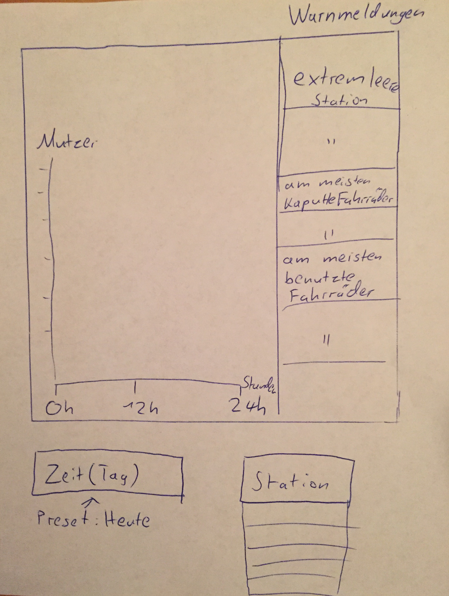
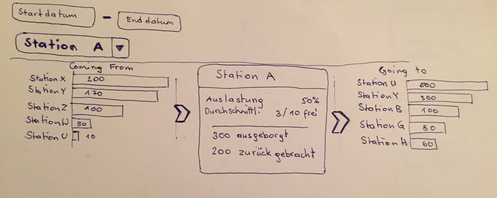

Home Project Team M1 M2 M3 Project
Tasks & OwnershipM1: Project Summary (analyzing citybike data)
For our project we are going to execute the task “analyzing citybike data”. We chose this project due to the fact that we all used the service before and found it interesting to analyze the data behind the service. After we analyzed the new data set we came to the conclusion that our ideas are realizable.
Old assumption:
At this point we aren’t sure how our data set is going to look like except that it will include the “damage reports”, “all driven routes” and “stations”. We were able to extract some data from the city bike map view from the source files and we found this web link:
Json-Citybike-Data.
This dataset includes the coordinates of each station and the number of available bikes as well as the total capacity. Our proposal is based on our assumptions of what the dataset will look like. We want to start a technique project.
Description of the task
The aim of our visualization is to provide historic statistics to employees of the CityBike organization. On the one hand we would like to provide them with assumptions of a day in the future by processing the younger data and on the other hand we will be showing the statistics for specific stations for certain timeframes.
View 1: This view is specifically for the department head that is responsible for the maintenance and delivering of the bikes. The view should provide warnings and the demand of the following day so that the personal can be prepared for future needs of the station. This task is hard to accomplish because you have to analyses the older data for this specific task and provide intelligent feedback to the user. Because of this it would be difficult to use static tools like tableau.
View 2: This view is also aimed at the staff of CityBikes. It displays a specific selected station for which one can then see the top stations from where the bikes came from and the top stations where bikes lended from this station were returned.
Description of solution
View 1

View 1: The settings of the view are on the left bottom corner. The day is preset to today, but you can change it to any day in the future. You can also change the station. By default no station is selected. All of the data that is going to be displayed is an assumption based on the data of the past. On the right side you can see the “warning column”. There are three types of warnings: most empty station, most broken bikes at a station and most used bikes at a station. For each warning type there are two warning for those stations where the description fits the most. On the left side you can see a line diagram. The X-axis are the hours of the day from 0-24. The Y-axis is the number of bikes that where lent at that point in time. When you pick a station the “warning column” will stay the same and the line diagram will change to the specific data of the station but the diagram structure stays the same.
View 2

This diagramm should show where the bikes are rented from and where to the bikes are returned. One can select a specific bike-station and specify a timeframe. At the center of the diagram an information box provides the main information and statistics for the selected station. This graph shows various information like the average number of available bikes, total capacity, number of damaged bikes, how many bikes where brought back to or taken from the selected station. On either side of the information box are bar charts - one for the stations from which the bikes arrived from at the selected station and one for the stations where the bikes are retuned from after hiring them at the selected station. The bar chart displaying the origin of the rented bikes returned at the selected station shows where the most bikes are coming from. The number of stations shown should be limited to a few results, so the viewer is not overwhelmed by mostly unnecessary information. The chart to the right shows where most bikes are returned after they were hired at the selected station. This visualization is meant to show the typical routes people are riding and hopefully provide a basis for planning how many bikes should be placed in each station or even where its best to build new stations.
Expertise of group members
Anreiter Simon(a1201759)
Prior to this project I attended the course HCI where I gained some insight on how to important visual presentation can be. Apart from this I have no experience with visualization but am very involved in programming which is why tools like D3 will hopefully be quick to understand for me.
Christoph Eitenberger(a1248272)
Before this class I had no experience with visualization except what I've learned in school. The class already gave me an insight into tableau and D3 which was very interesting. In the context of D3 I have some experience with JavaScript and JQuery.
Moser Victoria (a1200628)
Previously to attending the Visualization class I had no experience with visualization. Utilizing Tableau was very interesting and self explanatory whereby the assignment using D3 showed some challenges and difficulties although I am sure that it gets easier the more practice one has.
Polzer Mikél (a0947192)
I also haven't had any direct experience with visualization before attending this class - at least not that I was aware of it (I attended the HCI class, so I have some background in some of the basics which are important for the field of visualization). I have a strong interest in the topic from a cognitive science (Which design suits our perceptional system best?) as well as computer science (How to implement the design choices best?) point of view. I have a little experience with JavaScript, but haven't used D3 outside the context of this course.